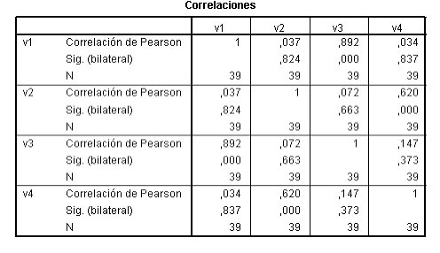

Resumen
Durante los últimos quinientos años, gran parte de la población mundial se ha enfrentado al problema del abuso de melancolía. Esta investigación explora la relación entre la tendencia a mirar al pasado y los estados melancólicos en adolescentes de Bogotá.
Planteamiento del problema
Estudios previos sugieren que en contextos culturales diversos existe una mayor inclinación a recordar el pasado. Sin embargo, la literatura ha prestado poca atención a la relación directa entre nostalgia, recuerdo y melancolía.
Metodología
Se utilizó una metodología mixta experimental basada en una bitácora personal donde los participantes registraban momentos asociados a sentimientos melancólicos y palabras clave relacionadas con dichos estados emocionales.
Resultados

Los hallazgos indican una fuerte correlación entre las variables “ex novia”, “domingo por la tarde” y “esa persona que nunca volví a ver y extraño”.
Discusión
“Y sé muy bien que no estarás. No estarás en la calle, en el murmullo que brota de la noche...”
Los resultados se interpretan a la luz de diferentes perspectivas teóricas que vinculan la ausencia, el recuerdo y la construcción emocional de la nostalgia.
Concluciónes
se creó un documento aparte para el analisis detallado de los datos en el siguiente enlace:
AbrirDocumento completo
Puede consultarse el trabajo completo en el siguiente enlace:
Abrir documento